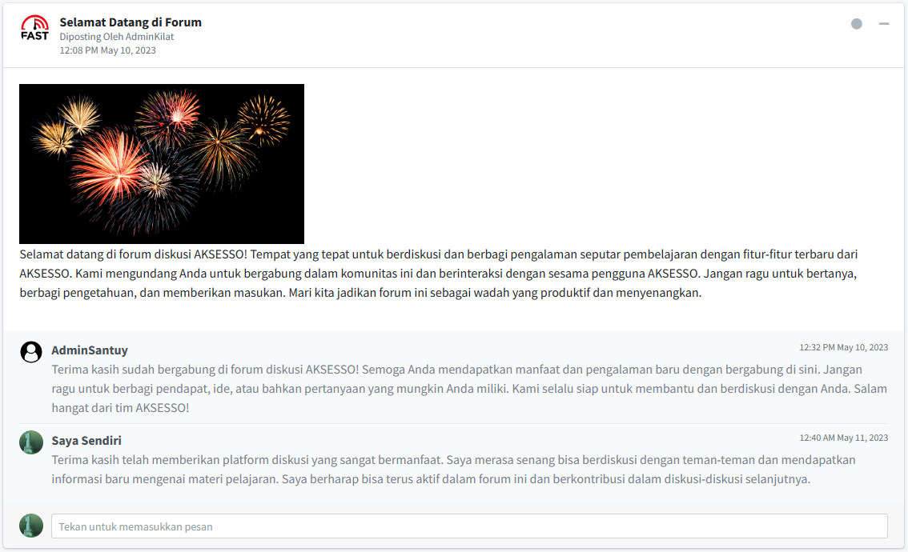

{% if current_user.is_authenticated and current_user.type == 'admin' %}
{% extends 'basemin.html' %}
{% else %}
{% extends 'base.html' %}
{% endif %}
{% block title %} Informasi {% endblock %}
{% block nav_item_info %} active {% endblock %}
{% block content %}

<div class="container">
    <div class="card">
        <div class="card-header">
            <h3 class="card-title">Tutorial Penggunaan</h3>
        </div>
        <div class="card-body" style="width: 85%;">
            Forum (E-Discussion Forum) merupakan media diskusi online yang dapat diakses tanpa dibatasi ruang dan waktu.
            Anda bisa berkomentar dengan menekan area teks box dibawah kotak dan menekan ENTER untuk submit komentar
        </div>
        <div class="card-body">
            
        </div>
    </div>
</div>

{% block chart %} {% endblock %}
{% endblock %}